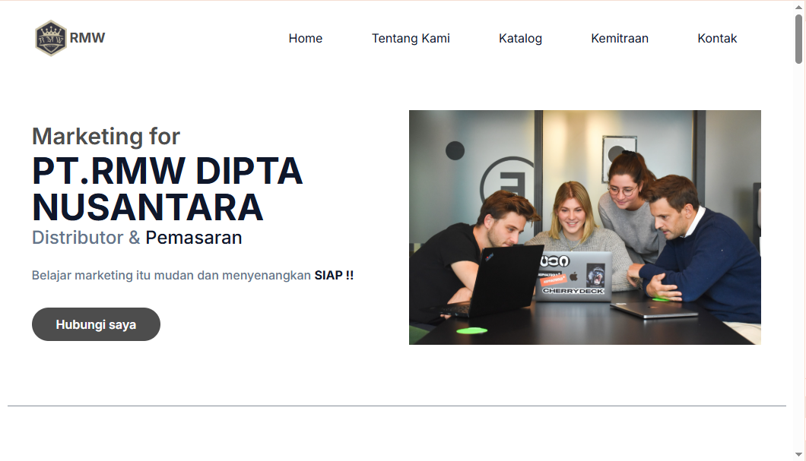
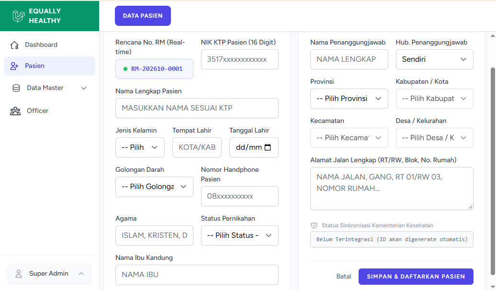

Transformasi Bisnis Anda dengan Website & Aplikasi Kustom.
Dari Landing Page kilat berbasis Tailwind CSS hingga Sistem Aplikasi Kompleks dengan Laravel. Solusi digital tepat sasaran untuk UMKM hingga Instansi Formal.
Layanan Kami
Tailwind CSS Web Statis
Landing page, undangan digital, dan katalog produk super cepat yang terintegrasi dengan Google Spreadsheet sebagai database gratisnya. Sangat hemat biaya dan mudah dikelola.
Laravel Custom System
Aplikasi web kustom, sistem inventaris gudang, kasir toko, hingga dashboard internal dengan keamanan dari framework Laravel yang dirancang sesuai kebutuhan alur bisnis Anda.
React JS Frontend Development
Pembuatan aplikasi web interaktif dengan React JS, termasuk integrasi API, state management, dan optimisasi performa untuk pengalaman pengguna yang mulus dan responsif.
Cara Kami Membantu Anda
Konsultasi
Diskusikan ide, kebutuhan fitur, dan budget bisnis Anda bersama kami.
Perancangan
Kami buatkan prototype desain awal untuk memastikan alur kerja sistem.
Development
Proses pengkodean cepat menggunakan Laravel, Tailwind, atau React JS.
Serah Terima
Website resmi meluncur, dengan maintainance berkala.
Portofolio Proyek
Berikut adalah beberapa landing page, sistem internal, dan aplikasi kustom yang telah sukses kami kembangkan untuk klien kami.

PT RMW DIPTA NUSANTARA — Distributor & Pemasaran
Landing page berbasis Tailwind CSS yang menampilkan katalog produk, dan sistem pemesanan via WhatsApp otomatis.

Sistem Informasi Kesehatan — bridging satusehat & BPJS berbasis Laravel, PostgreSQL dan React JS
Sistem internal berbasis Laravel dan React JS yang mengintegrasikan data kesehatan dari satusehat dan BPJS untuk mempermudah manajemen data pasien dan layanan kesehatan.
Siap Memulai Proyek Anda?
Konsultasikan kebutuhan website, landing page, atau sistem aplikasi bisnis Anda bersama tim pengembang kami secara gratis tanpa dipungut biaya.